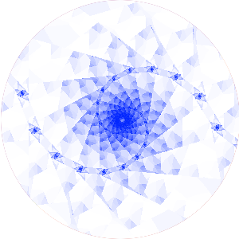

<!doctype html>
<html>
<head>
    <title>Experiment</title>
    <script src="https://ajax.googleapis.com/ajax/libs/jquery/1.11.1/jquery.min.js"></script>
    <script src="util/group_theory.js"></script>
    <script src="jspsych/jspsych.js"></script>
    <script src="jspsych/plugins/fractal-mutation-plugin.js"></script>
    <script src="jspsych/plugins/two-door-navigation-plugin.js"></script>
    <script src="jspsych/plugins/drag-drop-on-image-plugin.js"></script>
    <script src="jspsych/plugins/jspsych-survey-multi-choice.js"></script>
    <link href="jspsych/css/jspsych.css" rel="stylesheet" type="text/css"></link>
</head>
<body>
</body>
    <script>
    function choice(a) {
        return a[Math.floor(Math.random() * a.length)];
    }

    let this_group =  new square_cycles();
    var elements = this_group.get_elements();

    var this_fractal_assignment = ['images/blu_wht.png', 'images/cyn_red.png', 'images/grn_red.png', 'images/gry_blk.png', 'images/org_blu.png', 'images/pnk_blu.png', 'images/ylw_pnk.png', 'images/ylw_slt.png'];
    jsPsych.pluginAPI.preloadImages(this_fractal_assignment, function() {start_experiment();});
        
    var this_mutagen_assignment = [1, 0];
    var this_room_assignment = ["red", "green", "blue", "grey", "orange", "pink", "yellow", "purple"];
    var this_door_generator_assignment = [1, 0];
    var this_door_color_assignment = ["white", "black"];

    var test_fractal = {
        type: 'fractal-mutation',
        group: this_group,
        fractal_assignment: this_fractal_assignment,
        mutagen_generator_assignment: this_mutagen_assignment,
        action_noise: 0,
        goal: 4,
        start: 0
    };

    var test_fractal_2 = {
        type: 'fractal-mutation',
        group: this_group,
        fractal_assignment: this_fractal_assignment,
        mutagen_generator_assignment: this_mutagen_assignment,
        action_noise: 0,
        goal: 1,
        start: 3
    };

    var test_room = {
        type: 'two-door-navigation',
        group: this_group,
        room_assignment: this_room_assignment,
        door_color_assignment: this_door_color_assignment,
        door_generator_assignment: this_door_generator_assignment,
        action_noise: 0,
        goal: 4,
        start: 0
    };
    var test_room_2 = {
        type: 'two-door-navigation',
        group: this_group,
        room_assignment: this_room_assignment,
        door_color_assignment: this_door_color_assignment,
        door_generator_assignment: this_door_generator_assignment,
        action_noise: 0,
        goal: 1,
        start: 3
    };

    var drag_test = {
	type: 'drag-drop-on-image',
	background_image: "images/diagrams/square_cycles.png",
	dragging_images: ["images/blu_wht.png", "images/cyn_red.png"],
	locations: [{"x": 100, "y": 100}, {"x": 200, "y": 200}], 
	location_labels: [0, 1] 
    }

    var diagram_selection = {
	type: 'survey-multi-choice',
	questions: [ "The fractal relationships in your experiment obeyed one of the structures below, where the black squares correspond to fractals, the red arrows correspond to either the gamma ray or the acid, and the blue arrows correspond to the other. Select the structure that you think you had."],
	 options: [["", ""]],
    }
    var start_experiment = function() {
        jsPsych.init({
            timeline: [drag_test, diagram_selection, test_room, test_room_2, test_fractal, test_fractal_2],
            on_finish: function() {
                jsPsych.data.displayData('json');
            }
        })
    };
    </script>
</html>
